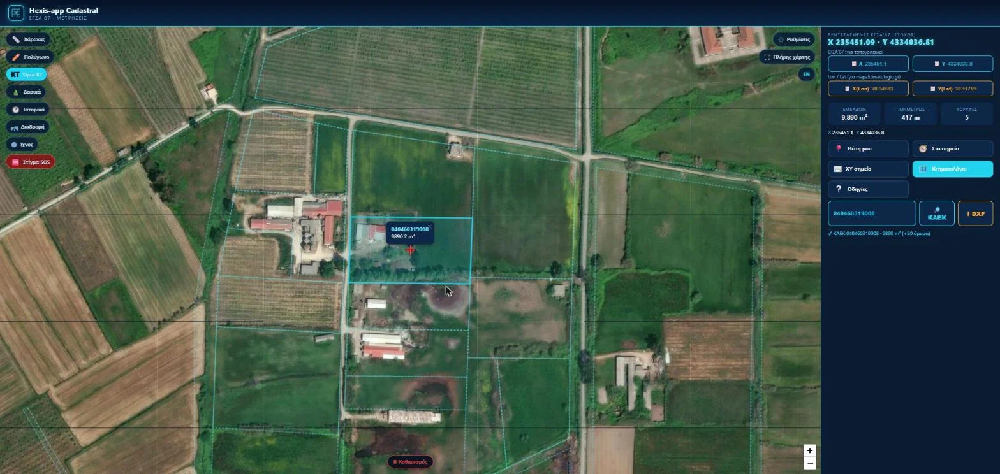
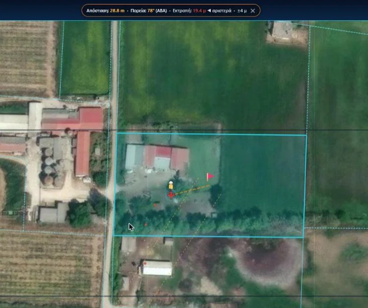
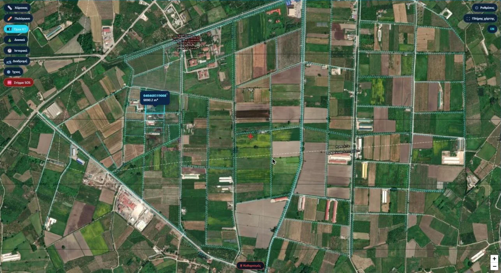

Ένα κλικ στον χάρτη δίνει το γεωτεμάχιο ΚΑΕΚ με εμβαδό, περίμετρο και όμορα. Στο πεδίο, η θέση σας παρακολουθείται σε πραγματικό χρόνο με συντεταγμένες ΕΓΣΑ87, πλοήγηση σε σημείο και στίγμα SOS.
50€ / έτος + ΦΠΑ · τρέχει στον browser, χωρίς εγκατάσταση

Ένα εργαλείο, μία δουλειά, σωστά.
Κλικ στον χάρτη: το γεωτεμάχιο εμφανίζεται με εμβαδό, περίμετρο και κορυφές.
Τα γειτονικά γεωτεμάχια σχεδιάζονται μαζί. Κλικ σε όμορο και γίνεται αυτό το κύριο.
Πληκτρολογήστε τον 12ψήφιο ΚΑΕΚ και ο χάρτης πηγαίνει στο γεωτεμάχιο.
Επίπεδα ορίων κτηματογράφησης και δασικών εκτάσεων πάνω στη δορυφορική εικόνα.
ΕΓΣΑ87 και γεωγραφικές συντεταγμένες στο σταυρόνημα, με αντιγραφή σε ένα πάτημα.
Γεωτεμάχια και δασικά πολύγωνα σε DXF για το σχέδιο.

Σε αυτοψίες και σε δύσβατο έδαφος, η θέση σας και ο προορισμός φαίνονται συνεχώς πάνω στα όρια του Κτηματολογίου.
Από το αρχείο στο αποτέλεσμα, στον ίδιο browser.

Πλήρης πρόσβαση στο Κτηματολόγιο & ΕΓΣΑ87, με όλες τις ενημερώσεις.
Δοκιμάστε το Κτηματολόγιο →
Από τη βάση γεωτεμαχίων ΚΑΕΚ του HEXIS, με γεωμετρία σε ΕΓΣΑ87. Η κάλυψη επεκτείνεται σταδιακά ανά περιφέρεια.
Ναι. Είναι σχεδιασμένο για κινητό, με live tracking, πλοήγηση σε σημείο και στίγμα SOS.
Όχι. Η θέση του κινητού έχει την ακρίβεια της συσκευής και φαίνεται με κύκλο ακρίβειας. Χρησιμεύει για προσανατολισμό, αυτοψία και ασφάλεια.
Όχι. Τρέχει στον browser.